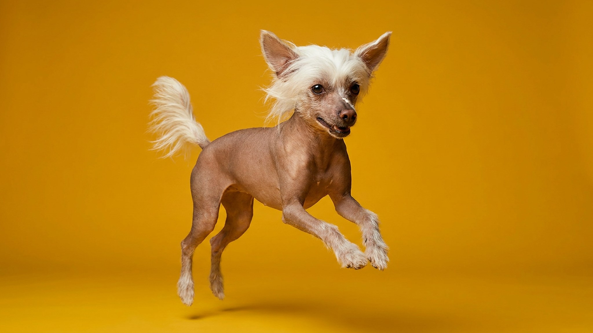

Гладишь китайскую хохлатую — и под ладонью не шерсть, а тёплая кожа, как у человека. Именно поэтому уход за ней ближе к косметическому, чем к «собачьему»: без шерсти кожа остаётся один на один с солнцем, морозом и сухим воздухом батарей. Разберём, что коже реально нужно, чего она не переносит — и почему «лысая» вовсе не значит «для аллергиков».
🐾 У вас китайская хохлатая?
AnimaLife соберёт уход под породу: к каким болезням есть склонность, что проверять по возрасту, чем кормить и когда пора к врачу. Бесплатно, прямо в мессенджере.
Собрать план ухода → Собрать в MAX →
У вас iPhone? AnimaLife есть в App Store
Кожа хохлатой работает без «шубы»: она быстрее теряет влагу, легче обгорает и охлаждается. Из-за этого и появляется главный парадокс породы — за ней ухаживать не проще, чем за длинношёрстной, а по-другому. Меньше расчёсывания, но больше внимания к состоянию самой кожи.
Здоровая кожа хохлатой ровная, эластичная, тёплая. Насторожить должны стойкое покраснение, шелушение, зуд или расчёсы — это повод показать собаку ветеринару, а не подбирать средства наугад.
Открытая кожа одинаково уязвима с обеих сторон. Летом на прогулке в полдень собака может обгореть за считанные минуты, зимой — быстро замёрзнуть.
Хохлатую купают чаще, чем шерстяных собак, но без фанатизма: слишком частое мытьё смывает защитный слой и сушит кожу. Ориентир — по мере загрязнения, мягким шампунём для чувствительной кожи, тёплой водой.
После купания кожу аккуратно промакивают и дают ей восстановить баланс. Средства для увлажнения и любые кремы стоит подбирать вместе с ветеринаром: то, что подходит одной собаке, другой может не подойти.
Логика «нет шерсти — нет аллергии» не работает. Аллергию у людей чаще вызывает не шерсть, а белки в слюне и в частичках кожи, а их у голой собаки достаточно. Хохлатая может линять кожными чешуйками, а пуховая разновидность — ещё и шерстью. Если в семье есть аллергик, единственный честный тест — провести время с конкретной собакой до того, как брать щенка.
🐾 Ваш питомец — китайская хохлатая?
Заведите профиль в AnimaLife: приложение запомнит породу, возраст и вес и будет подсказывать по уходу именно для неё. Вопросы AI-ветеринару — круглосуточно и бесплатно.
Завести профиль → Завести в MAX →
У вас iPhone? AnimaLife есть в App Store
🐾 Понравился разбор?
Подпишитесь на канал — каждый день разбираем по одному тревожному симптому у кошек и собак: что в пределах нормы, а когда пора к врачу. Подпишитесь, чтобы не пропустить разбор, который может спасти здоровье вашего питомца.
В одном помёте китайских хохлатых рождаются и голые собаки, и полностью покрытые мягкой шерстью — «пуховки» (паудерпафф). Это норма и одна генетика. Пуховке голый уход не нужен, зато нужна регулярная стрижка и расчёсывание, иначе шерсть сваливается. Выбирая щенка, честно решите, к какому уходу вы готовы.
Материал носит информационный характер и не заменяет очную консультацию ветеринара.